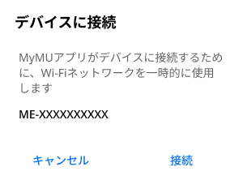
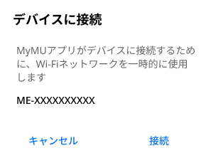
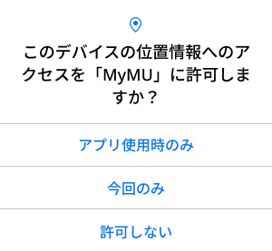
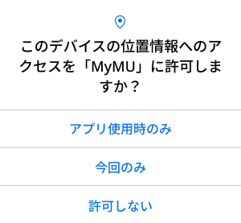
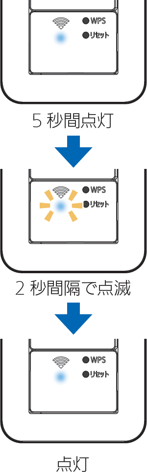

設定情報シール貼付位置
スマートスイッチを取り付けた際に施工業者が貼り付けた設定情報シールで確認してください。

アクセスポイントモードにする
- ブレーカーを「ON」にします。
- すでにブレーカーが「ON」になっている場合は手順2へ進んでください。
- 電源をONにしてもスマートスイッチのWi-Fiランプは消灯状態です。
- ブレーカーを入れて約5秒間はスイッチ操作ができません（P-04SWRCの場合、強/弱ランプが点灯）。
- スマートスイッチに電源が入っていることを確認します。

- 電源スイッチを押して、電源スイッチのON/OFFランプが点灯し、ロスナイやファンといった接続負荷機器が動作することを確認してください。
- スマートスイッチの「WPS」ボタンをWi-Fiランプの点滅間隔が短くなるまで（約5秒間）先の細いもので押して離します。

- Wi-Fiランプが5秒間に2回点滅します。
- この状態は約10分間で終了します。機器登録が完了する前に10分経過したときはWi-Fiランプの状態を確認し、再度APモードにしてください。
MyMUアプリを機器に接続する
- 以下のメッセージが表示されたら「接続」をタップしてください。「キャンセル」をタップすると接続に失敗します。
 

-
「次へ」をタップすると位置情報の使用許可を求めるメッセージが表示されます。「1度だけ許可」「Appの使用中は許可」あるいは「アプリの使用時のみ」「今回のみ」をタップしてください。「許可しない」をタップすると接続に失敗します。
 

- 接続に失敗した場合は次のメッセージが表示されます。「閉じる」をタップして最初からやり直してください。

おしらせ
オートメーション機能で位置情報を使用する場合は、位置情報の許可を求める画面で「Appの使用中は許可」「アプリの使用時のみ」をタップし、「正確な位置情報」を「オン」にしてください。オートメーション機能については取扱説明書をご確認ください。
スマートスイッチをWPS機能で接続する
- ブレーカーを「ON」にします。
- すでにブレーカーが「ON」になっている場合は手順2へ進んでください。
- 電源をONにしてもスマートスイッチのWi-Fiランプは消灯状態です。
- ブレーカーを入れて約5秒間はスイッチ操作ができません（P-04SWRCの場合、強/弱ランプが点灯)。
- スマートスイッチに電源が入っていることを確認します。
- 電源スイッチを押して、電源スイッチのON/OFFランプが点灯し、ロスナイやファンといった接続負荷機器が動作することを確認してください。
- スマートスイッチの「WPS」ボタンを先の細いもので約2秒間押して離します。
- 5秒以上押さないでください。5秒以上押すとAPモードになります。
Wi-Fiランプ 状態 対処方法 点滅
(0.5秒間隔)Wi-Fiを探している 正常です。 消灯 Wi-Fiに接続していない エラーです。
再度手順「3」を実施してください。点滅
(5秒間に2回点滅)APモード APモードになっています。
「WPS」ボタンを先の細いもので5秒以上押し、
Wi-Fi ランプが消灯しているのを確認してから、
再度手順「3」を実施してください。 - ルーターの「WPS」ボタンを数秒間押して離します。

- スマートスイッチのWi-Fiランプが5秒間点灯（WPS成功）することを確認します。

- 接続完了です。
- サーバーとの初期通信が開始されWi-Fiランプが2秒間隔で点滅し、通信が完了すると点灯します。2秒間隔での点滅時間は通信状態により変化します。